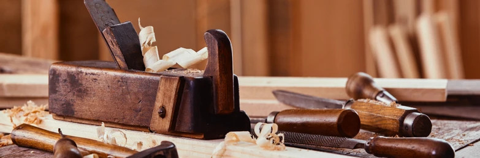
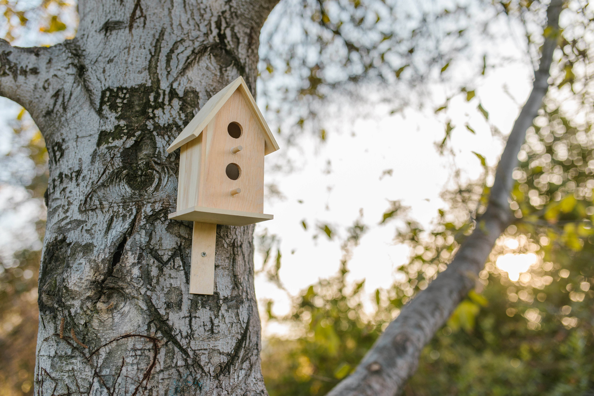
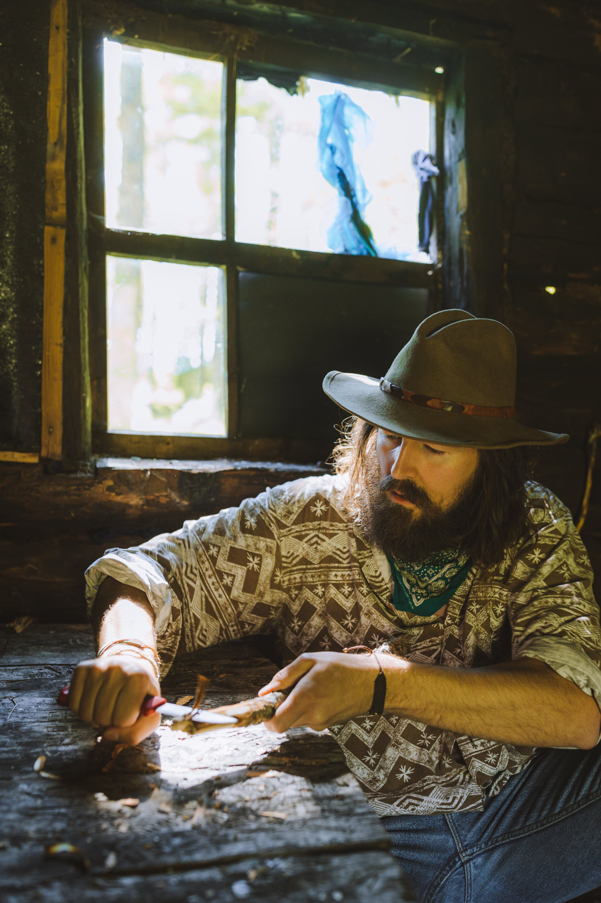

Welcome to The River Post, an online sanctuary for woodworking enthusiasts seeking inspiration, guidance, and a touch of DIY magic. Our digital workshop invites both novices and seasoned artisans to embark on a woodworking journey that transforms humble materials into extraordinary creations.
-
As you enter The River Post, be prepared to explore a world where imagination meets craftsmanship. Our home page serves as the gateway to a treasure trove of woodworking projects, carefully curated to cater to every skill level. Whether you're crafting your first piece or looking for a weekend project, our user-friendly interface ensures a seamless and enjoyable experience.
-
The heart of our platform lies in simplicity and accessibility. We believe that woodworking should be an inclusive passion, and thus, our projects require only basic tools and commonly available materials. From charming birdhouses that bring nature to your doorstep to intricately carved walking sticks that merge functionality with art, our projects are a testament to the diversity of woodworking.
-
While our current collection features handpicked projects by our team, we envision a future where The River Post becomes a collaborative space. Imagine sharing your woodworking triumphs, learning from fellow artisans, and contributing to a growing library of creativity.
-
Join us on this digital odyssey where woodworking isn't just a craft; it's a lifestyle. At The River Post, we celebrate the joy of creating, the thrill of transforming raw materials into cherished pieces, and the satisfaction of a completed project that reflects your unique style.
-
Let The River Post be your companion in turning your woodworking dreams into tangible, beautiful realities.
Build Your Own Birdhouse!
Follow our easy, step-by-step instructions to build your very own birdhouse!
Relief Carving Made Easy With Walking Sticks!
Learn how to make beautiful relief carvings as you create a practical but exquisite walking stick masterpiece you can take on any adventure!